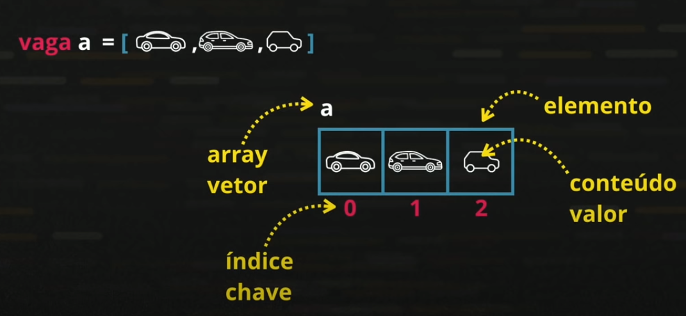

Aula 15
Variáveis Compostas
São os famosos arrays, ou vetores (coleção)
Diferente das variáveis simples, que só podem aramzenara um valor por vez, as compostas conseguem armazenar vários valores em uma mesma estrutura.

As variáveis compostas economizam linhas de código.
Para declarar tais variáveis, usamos o array, formado pelos dados entre colchetes ([]). Cada espaço do array é chamado de elemento, sendo que este é formado pelo espaço da memória, pelo valor que o mesmo armazena e pelo índice. Para separar os elementos, utiliza-se vírgula (,)
Para adicionar valores no array, podemos utilizar o nome da variável, seguida do índice entre colchetes e o sinal de atribuição seguido do valor a ser inserido no índice indicado. Caso queiramos adicionar algum valor à última posição do array, uilizamos o método interno push.
Para saber o comprimento do array, utilizamos o atributo length (que é um atributo pois não utiliza parênteses após o chamamento do comando).
O método sort é utilizado para ordenar os valores do array. Assim, os mesmos ficarão em ordem crescente.

Para arrays, podemos utilizar o código for in para percorre o array
Podemos também buscar valores dentro dos vetores, com o método indexOf(). Esse método retorna a posição do valor passado como parâmetro. Caso o valor passado não esteja no array, o método retorna o valor -1.
Exercício 019